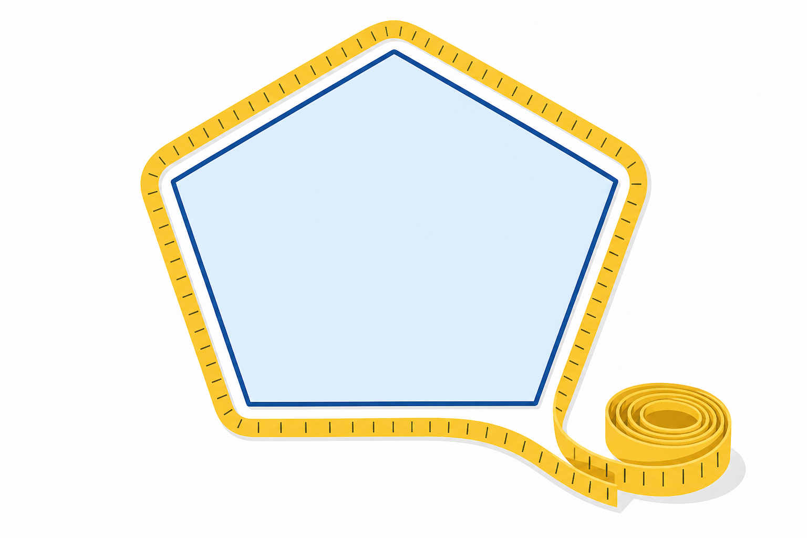

Co to jest? Що це?
Obwód to długość „dookoła” figury — ile zmierzysz, idąc po brzegu.
Периметр — довжина «навколо» фігури — скільки виміряєш, ідучи по краю.
Jak w szkole? Як у школі?
Obwód = suma długości boków.
Периметр = сума довжин сторін.
Przykład z życia Приклад з життя
Płotek dookoła ogródka: dodajesz długości wszystkich boków — to obwód.
Паркан навколо городу: додаєш довжини всіх сторін — це периметр.
P = suma długości boków